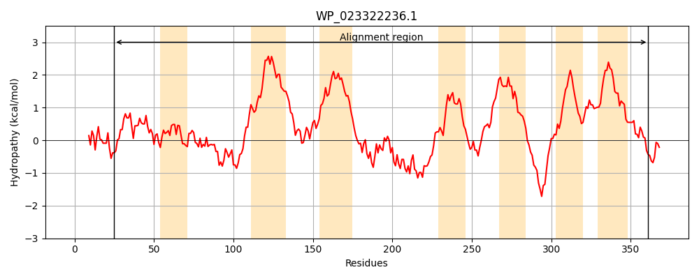
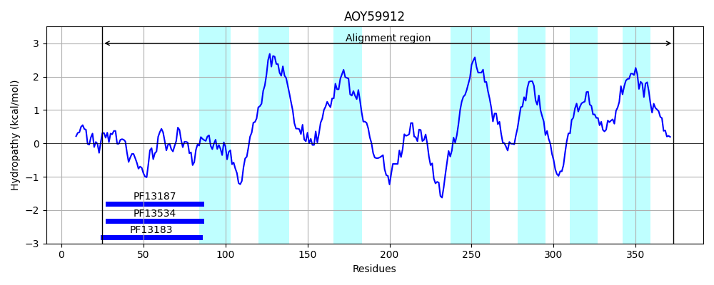
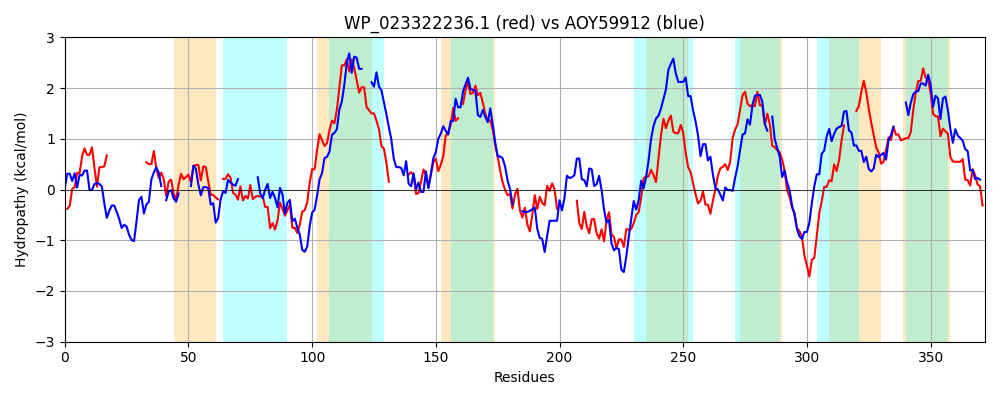

Hit Accession: AOY59912
Hit TCID: 3.D.7.1.6
Hit Description: gnl|BL_ORD_ID|1388 gnl|TC-DB|AOY59912|3.D.7.1.6 QmoC: quinone interacting membrane bound oxidoreductase, subunit C [Desulfococcus multivorans]
Mach Len: 372
e:0.000000
Query TMS Count : 7
Hit TMS Count: 7
TMS-Overlap Score: 2.950000
Predicted Substrates:None
BLAST Alignment:
Score: 147 , Bit scores: 61 bits, E-value: 2.1e-10, Alignment length: 372, Percentage identity: 24
Query: 25 MQVCNACRYCEGFCAVFP---------------AMTQRLAFGKADINYLANLCHNCGACLHAC-QYAPPHEFAINVPKAMAEVRLETYQHYAQPAAFGSLYRRAGVTTVLALVGGLIFFLLLAMGLKGSLLH-------PPLAGDFYQIFPHNLLAWMFG-SVFVLAFGLLMTGVIRFWREISPGQPHAVDIAKASQDAL-------TLKYLDGGHGKGCNEADDAFTLMRRRFHHFTFYGFMLCFAATVVATGYHYFADREAPYPFFSVPVLLGTLGGIGLLVGPAGLLWLNLRRSPLHGDARQKPMDRGFILLL----LLTSFTGLALLAGRDTSWMGILLAVHLGVVMALFLTLPYGKFAHGFYRCAAL 361
++ C C C C + P + +L G ADI LCHNCG C C + A P + + +R Q YAQP L+ VL + ++F +L G+ G++L P + F H L + F A G+ G+ R +I A++ K + + L + G K + R H F+GF+ F T + Y PY + L + G+ L++G A L+ + P A + G L L +LT T L AG + +HL + F+ LP+ KFAH YR A+
Sbjct: 25 LKKCYQCATCAVACPISPDNKPFPRKEMIAASWGLKDKLV-GNADIW----LCHNCGDCSTLCPRGAKPGD-------VLGAIRAYAIQEYAQPKKLAELFNDPKKLPVLFAIPAVLFIVL---GIIGNILGFHFLDFTPGGEEIVHAKFIHTTLVDIIMIPTFFAAIGIFAMGLKRLIADI---HKDALETGKTTLQKIDPKGFAEALVRVIPGIFKHKKFTECGENTERATSHMMVFFGFLGLFIVTNIFFVVLYGFGIHGPYSQLNPVKWLANIAGVALIIG-AALMIKDRTAKPDQVSAYKDWFIIGLALALGATGMLTQMTRLGGAAGLSY----FIYFIHLLCIWVFFMCLPFSKFAHIIYRTVAM 373 | Protein Hydropathy Plots: |
|---|
|  |  |
Pairwise Alignment-Hydropathy Plot:
|
|---|
|  |